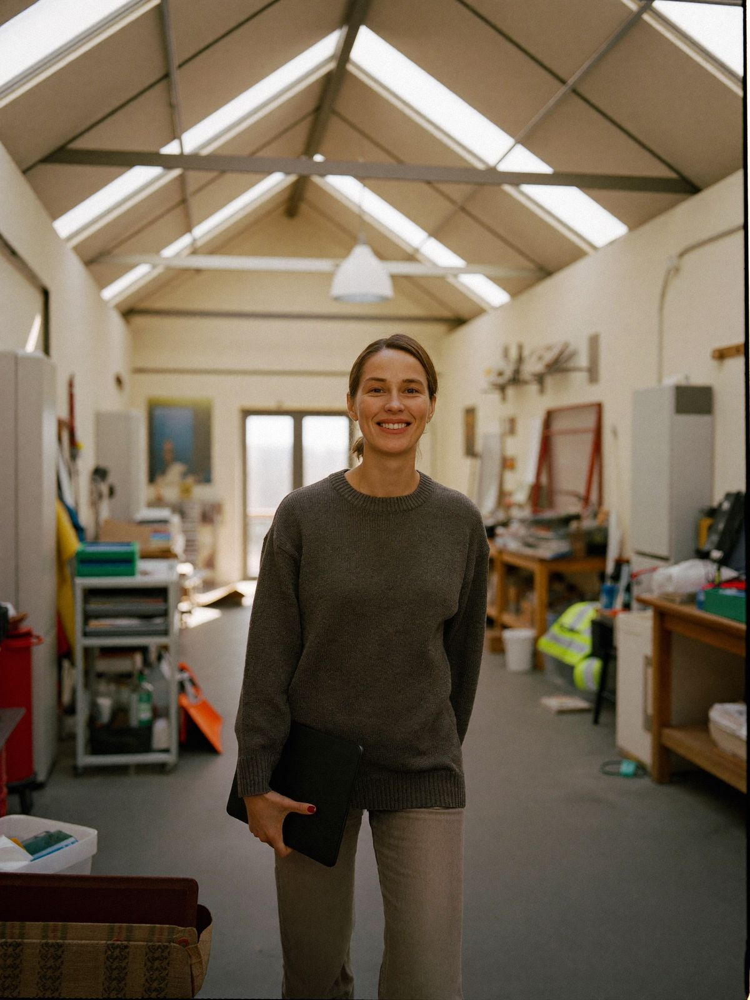

01 · Sichtbarkeit & Marke
Mehr erfahren
Gefunden werden. Und überzeugen.
Website, Google-Profil, Texte und Bilder: Wir sorgen dafür, dass Ihr erster Eindruck so professionell ist wie Ihre Arbeit.
Website, Telefonanlage, Terminbuchung, Google-Profil und E-Mail aus einer Hand: Wir sind die externe Digitalabteilung für Arztpraxen, Kanzleien und mittelständische Unternehmen. Persönlich, vorausschauend und ohne dass Sie dafür Technik verstehen müssen.
Sie behandeln, beraten, produzieren. Das Digitale drumherum soll einfach funktionieren. Genau dafür sind wir da.
Terminbuchung über Doctolib, eine Telefonanlage, die Rezeptwünsche vorsortiert, und eine Website, die neue Patienten nicht abschreckt. Wir richten es ein und halten es am Laufen.
Mandanten prüfen Sie im Netz, bevor sie anrufen. Wir sorgen dafür, dass dieser erste Eindruck stimmt und dass danach jeder Anruf und jede E-Mail zuverlässig ankommt.
Kein Pendeln mehr zwischen Webagentur und Systemhaus. Wir verbinden Website, Telefonie, CRM und E-Mail zu einem Ganzen und halten es aktuell, während Sie Ihr Geschäft führen.
Sichtbarkeit, Technik und Betreuung gehören zusammen. Deshalb bekommen Sie bei uns alle drei aus einer Hand.
Website, Google-Profil, Texte und Bilder: Wir sorgen dafür, dass Ihr erster Eindruck so professionell ist wie Ihre Arbeit.

Cloud-Telefonie mit Placetel, Terminbuchung mit Doctolib, Hosting und E-Mail bei Partnern wie IONOS und Netleaders. Alles verbunden, alles gewartet.
Eine kurze Nachricht genügt. Urlaub, neue Öffnungszeiten, eine neue Kollegin: Wir stellen Website, Google-Eintrag und Telefonansage um. Und wieder zurück.
Eine Karriereseite, die bei Google gefunden wird, und eine Online-Bewerbung, die in zwei Minuten vom Handy geht. Dialyse Güstrow: zwei MFA in vier Wochen. DIGIZT: zwei Servicetechniker in sechs Wochen.
Kein Projekt, das nach dem Launch endet. Wir bleiben Ihr Ansprechpartner, solange Sie uns brauchen.
20 Minuten am Telefon oder per Video. Wir schauen vorher auf Website, Telefon und Google-Profil und sagen Ihnen offen, was gut ist und was nicht.
Sie bekommen eine Seite: was wir empfehlen, in welcher Reihenfolge und was es kostet. Ohne Fachchinesisch, ohne Kleingedrucktes.
Einrichten, umstellen, betreuen. Sie schreiben uns, wenn sich etwas ändert. Wir melden uns, bevor etwas ausläuft.
Bundesweiter Reparaturservice für Haushaltsgeräte mit Online-Terminbuchung. Über die Karriereseite mit Online-Bewerbung zwei Servicetechniker in sechs Wochen gewonnen. [Leistungsumfang ergänzen]
SEO-optimierte Karriereseite mit Online-Bewerbung. Zwei MFA in vier Wochen besetzt, trotz Fachkräftemangel. [Leistungsumfang ergänzen]
Praxis-Website und digitale Erreichbarkeit für eine Facharztpraxis. [Leistungsumfang ergänzen]
Website mit Buchungsanfrage für eine Ferienvermietung. [Leistungsumfang ergänzen]
„Hier steht ein echtes Zitat einer Kundin oder eines Kunden. Zwei bis drei Sätze darüber, was sich im Alltag verändert hat.“[Name, Funktion, Unternehmen]
„Ein kurzes Zitat, ein Satz genügt.“[Name, Funktion, Unternehmen]
Die meisten Praxen, Kanzleien und Betriebe kennen das: Für die Website gibt es eine Agentur, für die Telefonanlage ein Systemhaus, für den Google-Eintrag niemanden. Und wenn etwas hakt, zeigt jeder auf den anderen.
Digital Avenue ist entstanden, um genau das zu beenden. Wir verbinden die Werbeagentur mit dem Internetdienstleister, das Kreative mit dem Technischen. Sie haben einen Ansprechpartner, der beides versteht und beides verantwortet.
Wir sind bewusst klein und persönlich. Sie sprechen mit Nils Rudolph, nicht mit einem Ticketsystem. Wir merken uns Ihre Urlaubszeiten, wissen, welche Kollegin neu ist, und melden uns, bevor ein Zertifikat ausläuft.
Wir schauen uns an, was Ihre Kunden, Patienten oder Mandanten heute erleben, wenn sie Sie erreichen wollen. Sie bekommen eine ehrliche Einschätzung in Klartext. Ob daraus mehr wird, entscheiden Sie.